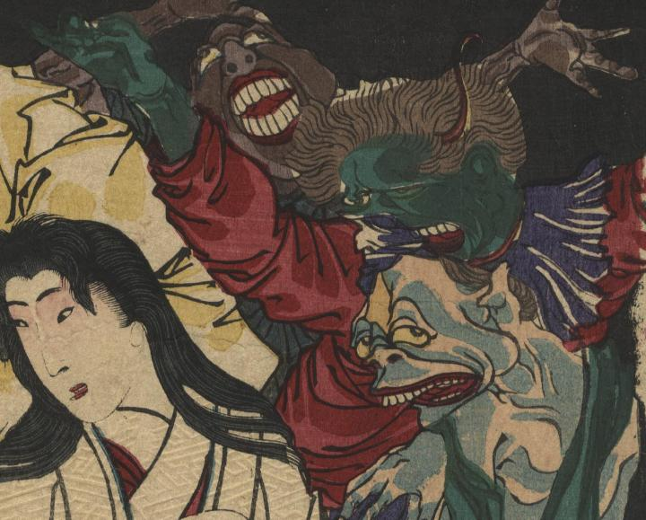

緑色の鬼が両手を大きく挙げている。頭にはふさふさとした毛が生えている。
著作者：一魁齋芳年／出典：親書誌：U426_nichibunken_0337：豪傑奇術競；ゴウケツ キジュツ クラベ／日付：2014／資源識別子：U426_nichibunken_0337_0003_0007
Copyright (c)2010- International Research Center for Japanese Studies, Kyoto, Japan. All rights reserved.